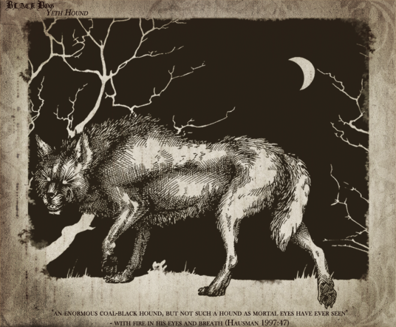

Introduction: Using the tools and techniques discussed in class, create a formal composition that you find beautiful. Each composition should include some element (a snippet of code) from the week prior. Consider how you can use the formal qualities that are unique to the web to emphasize emotions or convey ideas. In what ways can you use the language of the web to convey these ideas?